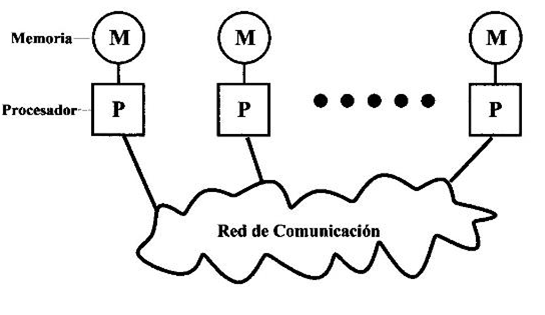

#3 Arquitectura de Paso de Mensajes (Message Passing)

La arquitectura de paso de mensajes es un modelo de programación paralela y distribuida en el que los procesadores o nodos de cómputo se comunican intercambiando mensajes a través de una red de comunicación. En este modelo, los procesadores no comparten memoria física, por lo que la comunicación entre ellos se realiza exclusivamente a través del intercambio de mensajes.
En la arquitectura de paso de mensajes, los procesadores envían mensajes a otros procesadores para compartir datos y coordinar tareas. Cada procesador tiene su propia memoria local y controla su ejecución de manera independiente. Los mensajes contienen información que puede incluir datos, instrucciones o señales de control, y se transmiten de un procesador a otro a través de canales de comunicación.
Esta arquitectura permite una comunicación flexible entre procesadores y nodos en sistemas distribuidos. Los mensajes pueden ser enviados de forma síncrona o asíncrona, lo que significa que los procesadores pueden esperar una respuesta antes de continuar o pueden seguir ejecutando otras tareas mientras esperan una respuesta.
El modelo de programación basado en el paso de mensajes tiene varias ventajas. Permite una alta escalabilidad, ya que los nodos pueden agregarse o eliminarse fácilmente sin afectar la comunicación global. Además, el paso de mensajes proporciona un mecanismo explícito para la comunicación y sincronización entre procesadores, lo que puede simplificar el desarrollo de aplicaciones paralelas complejas.
La programación en la arquitectura de paso de mensajes requiere el diseño cuidadoso de algoritmos y la gestión eficiente de la comunicación entre los procesadores. Los programadores deben considerar aspectos como la división de tareas, la sincronización, la asignación de recursos y la minimización de la sobrecarga de comunicación.
En resumen, la arquitectura de paso de mensajes es un modelo en el que los procesadores se comunican intercambiando mensajes a través de una red de comunicación. Proporciona flexibilidad en la comunicación entre procesadores y es adecuada para sistemas distribuidos. El modelo de programación basado en el paso de mensajes permite una alta escalabilidad y un control explícito sobre la comunicación y sincronización entre procesadores.